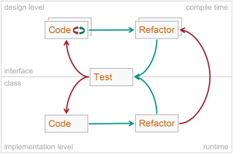

Test Driven Development (TDD) is a technique at the core of agile software development. This technique has been described by Kent Beck in his book Test Driven Development by Example. The goal of Test Driven Development is to accelerate feedback by conducting the so called TDD cycle. The TDD cycle consists of the three consecutive activities run in a circle: test, code and refactor.
 The TDD by Contract cycle shown in the figure below illustrates the rationale of TDD by Contract:
On an design level the TDD cycle comprises the activities
Analysis by Contract
and
Design by Contract
and looks like this:
Test |
To add a new method to our interface under test, we first write a test using this method. As the method is not declared yet, the test case will not compile (becomes red). This activity is called Analysis by Contract. |
Code |
We declare the new method in the interface under test so that compiling the test case succeeds (becomes green). In the corresponding interface contract class we add the pre- and postconditions of the new method in order to specify its intended behaviour. As the pre- and postconditions have to use the "vocabulary" of the emerging interface, we might be summoned to declare new methods in the interface in the case the actual "voacubulary" is not rich enough. This recursive activity is depicted in the figure as a small selfreferencing red-green circle. It is an important feature of Design by Contract and leads to consistent and exhaustive and therefore stable interfaces. |
Refactor |
We clean up our interface under test, i.e. split one method into two in order to adhere to the command query separation principle. We check the result of this refactoring by compiling the test case. When the test case can be successfully compiled (is green again) we can be sure that our refactoring has not broken the interface. In the case of having added a basic query In the corresponding interface contract class we reestablish the accordance of all command postconditions with the fourth of the six principles if necessary, i.e. when having added a new basic query to the interface under test. |
On an implementation level the TDD cycle comprises
Implementation by Contract
and
Testing by Contract
and looks like this:
Test |
To implement a feature in our class under test, we first write (or if it already exists: focus on) a test using this feature according to its specification given by the contract. This activity is called Testing by Contract. As the feature usualy is not implemented yet, the test will fail (become red) when running JUnit. |
Code |
We implement the new feature by adding a method or enriching an existing method until the focused test succeeds (becomes green). This activity is called Implementation by Contract. |
Refactor |
We clean up our implementation, i.e. split a long method into two short ones to ensure that each method has a single responsibility. Please note that such a change has an impact on the interface and interface contract too, so we shortly have to jump back on the design level. Refactoring on the implementation level could enforce refactoring on the design level. C4J's syntax was carefully designed to fully support modern IDE's refactoring functions. We check the result of our refactoring by running the test case. When all tests are green again we can be sure that our refactoring has not broken the class. |